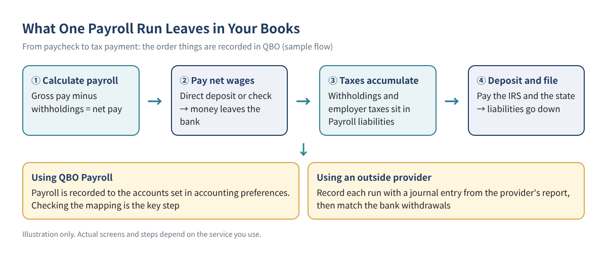
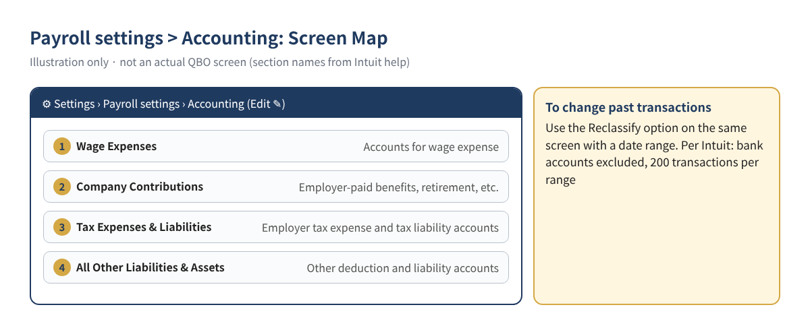
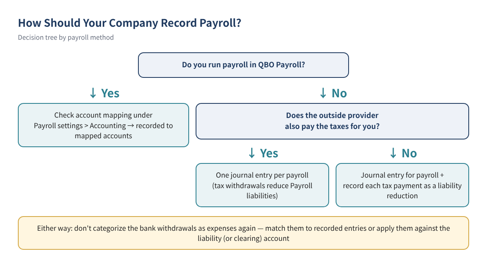
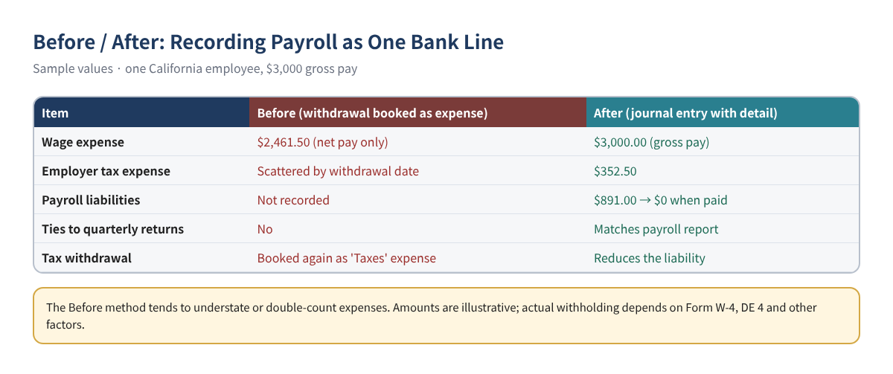

Booking Payroll as One Bank Withdrawal? How to Record Payroll in QuickBooks Online (QBO Payroll vs. Outside Providers, Nevada, California and Texas Compared)
Payroll looks simple if you only watch the bank account: money goes out on payday. But every payroll run actually contains three things: the net pay that reaches your employees, the taxes withheld from their pay, and the taxes your company owes on top. If you categorize only the bank withdrawal as "payroll expense," wage expense ends up lower than gross pay, the tax withdrawals later get booked as a separate "Taxes" expense, and your books stop matching your quarterly payroll returns.
This guide walks through recording payroll in QuickBooks Online (QBO) in the two common setups: running payroll in QBO Payroll and using an outside payroll provider. It also compares the state payroll taxes in Nevada, California and Texas, based on each state agency's official pages. It expands the payroll section of the series starter, QuickBooks Online Basics for Beginners.
This article is general educational information, not tax, legal or financial advice.
Who this is for ☐ You categorize each payroll provider withdrawal in the bank feed as "Payroll expenses" ☐ You use QBO Payroll but have never checked which accounts it posts to ☐ Payroll expense on your P&L doesn't tie to your quarterly returns (Form 941 and state reports) ☐ You have employees in more than one of Nevada, California and Texas, or plan to
1. The principle: every payroll run splits into three parts
Take an employee with $3,000 of gross pay. From the company's side, that paycheck breaks into three parts.
- Net pay: the amount deposited to the employee. It leaves the bank right away.
- Employee withholdings: federal income tax, the employee share of Social Security and Medicare, and in some states state income tax or state disability insurance. The money belongs to the employee, but the company holds it and pays it to the government. Until paid, it is a company liability (Payroll liabilities).
- Employer taxes: the employer share of Social Security and Medicare, federal unemployment tax (FUTA) and state unemployment insurance (SUI). These are a company expense, and also a liability until paid.
Recorded correctly, the P&L shows "gross pay + employer taxes" as expense, while withholdings and employer taxes sit in liabilities and disappear when paid. A tax payment withdrawal is a reduction of a liability, not an expense.

2. Federal payroll tax basics (same in all three states)
Federal payroll taxes don't depend on the state. Based on IRS Publication 15 (2026) and Topic 751, the basics are below. Federal income tax withholding has no single rate; it depends on the employee's Form W-4 and the tables in IRS Publication 15-T.
| Item | Employee share | Employer share | 2026 |
|---|---|---|---|
| Social Security | 6.2% | 6.2% | Wages up to $184,500 |
| Medicare | 1.45% | 1.45% | No wage base limit |
| Additional Medicare Tax | 0.9% (wages over $200,000 a year) | None (no employer match) | Withhold starting in the pay period wages pass $200,000 |
| FUTA | None | 6.0%, credit up to 5.4% for state tax → generally 0.6% (the credit is reduced if the state is a credit reduction state for the year) | First $7,000 per employee |
| Federal income tax | Per W-4 and Pub 15-T | None | Varies by employee |
Form 941 (quarterly federal payroll return) is due by the last day of the month after the quarter, and Form 940 (annual FUTA return) is filed once a year; Publication 15 gives January 31 as its due date. Weekends and holidays can shift the actual date, so check the Form 940 instructions for the year. Pub 15 and the Form 940 instructions also explain whether your state is a credit reduction state that lowers the FUTA credit. Federal tax deposits must be made by EFT, and each employer's deposit schedule (monthly or semiweekly) is set by IRS rules. Check Publication 15 for your exact deposit dates.
Tip: The IRS says using a payroll service provider (PSP) or reporting agent doesn't relieve the employer of responsibility for correct, timely filing and payment. If your provider pays the taxes, compare its payment history with your QBO Payroll liabilities balances every quarter.
3. State comparison: Nevada, California, Texas
The real differences are at the state level. The table reflects each state agency's official pages as checked on November 22, 2026. Company unemployment rates change every year with experience rating, so use the rate notice your state sends you.
Already announced for 2027: Nevada UI wage base $45,400 (DETR) and California SDI 1.4% (EDD). Check that your payroll setup picks up these values for 2027 paychecks.
| Item | Nevada (NV) | California (CA) | Texas (TX) |
|---|---|---|---|
| State income tax withholding | None (Dept. of Taxation: no state income tax on individuals) | Yes (PIT, based on DE 4 and EDD withholding schedules) | None (Texas.gov: no state personal income tax) |
| State unemployment agency | DETR Employment Security Division (ESD) | EDD | Texas Workforce Commission (TWC) |
| UI taxable wage base (2026) | $43,700 per employee | $7,000 per employee | $9,000 per employee |
| New employer UI rate | 2.95% (per DETR) | 3.4% (for 2–3 years, per EDD) | 2.70% for 2026 (TWC: 2.70% for all groups with no exceptions in 2026) |
| Other employer-paid items | Career Enhancement Program 0.05% (per DETR); Modified Business Tax (see below) | ETT 0.1% (first $7,000) | Several components combine into the TWC rate |
| Employee-paid state items | Not addressed on the official pages checked | SDI 1.3% (2026, no wage limit) | Not addressed on the official pages checked |
| Quarterly reporting | Employer's Quarterly Contribution and Wage Report, filed online by the last day of the month after the quarter | DE 9 and DE 9C, delinquent after the last day of the month after the quarter (Q4 2026: February 1, 2027) | Reports and payments due by the last day of the month after the quarter; electronic filing and payment required |
Nevada's Modified Business Tax (MBT) applies to employers subject to Nevada unemployment compensation law and is reported quarterly on gross wages minus employer-paid employee health benefits. Per the Department of Taxation, the general business rate is 1.17% (the rate in effect since July 1, 2023), and the first $50,000 of wages is not taxable. The same page lists exceptions (nonprofits, Indian tribes, political subdivisions and household-only employers) and a 1.554% rate for financial institutions and mining. The Department says a return is required even when no tax is due, so confirm whether it applies to you and how the period is measured with the Department. In QBO, MBT is generally recorded as a company expense + liability, not as an employee withholding.
In California, employers pay UI and ETT while employees pay SDI and state income tax (PIT), so separate QBO liability accounts such as "CA SUI/ETT" (employer) and "CA PIT/SDI" (employee withholding) make reconciling easier. Texas has no state income tax withholding, and TWC states that unemployment taxes are not deducted from employee wages.
4. If you use QBO Payroll: check the account mapping first
When you run QBO Payroll (Core, Premium or Elite) with accounting turned on, payroll is recorded to the accounts set in your accounting preferences. Intuit notes that QuickBooks automatically creates default accounts for payroll liabilities and expenses, which you can change. If you never reviewed the setup, payroll may be landing in those default accounts.
- Go to Settings ⚙ → Payroll settings. (If the menu has moved, type "Payroll settings" in the search bar.)
- Select Edit ✎ next to Accounting.
- Review the four sections: Wage Expenses, Company Contributions, Tax Expenses & Liabilities and All Other Liabilities & Assets.
- Choose the accounts you want, then select Save and Done.
- To change payroll transactions already recorded, use the Reclassify option on the same screen with a start and end date. Per Intuit, bank accounts are not changed and there is a limit of 200 transactions per date range.

After mapping, open Reports → Standard reports, scroll to the Payroll section and run Payroll Summary or Payroll Summary by Employee (this is the path in Intuit's help article; your screen may differ), then compare it with wage and payroll tax expense on the P&L for the same period. Per Intuit, the report's dates are paycheck dates, not pay period dates.
Tip: If payroll lands in the wrong account and you use account numbers, Intuit suggests checking the account number setting first. For general chart of accounts cleanup, see part 1 of the series, Opening Balances and Chart of Accounts Setup.
5. If you use an outside provider: record payroll with journal entries
For payroll run outside QuickBooks with services such as ADP or Paychex, Intuit describes recording each payroll as a journal entry. Note that this method does not create the data QBO would need for W-2s, so W-2s and quarterly returns come from your provider's records.
5-1. Create the accounts first
Intuit's help article uses an account setup like the one below. Replace [State] with your state, and create a set for each state where you have employees.
| Account name (example) | Account type | What goes in |
|---|---|---|
| Payroll Expenses: Wages | Expense | Gross pay |
| Payroll Expenses: Taxes | Expense | Employer taxes (employer FICA, FUTA, state UI, etc.) |
| Payroll Liabilities: Federal Taxes (941/944) | Liability | Federal income tax withheld + employee and employer FICA |
| Payroll Liabilities: Federal Unemployment (940) | Liability | FUTA |
| Payroll Liabilities: [State] SUI/ETT | Liability | State UI and other employer-paid state taxes |
| Payroll Liabilities: [State] PIT/SDI | Liability | State income tax, SDI and other employee withholdings (where applicable) |
5-2. Enter one journal entry per payroll
- Select + Create (or + New on some screens) → Journal entry.
- Use the paycheck date as the journal date; optionally put the payroll number in Journal no.
- Debits: gross pay → Payroll Expenses: Wages; employer taxes → Payroll Expenses: Taxes.
- Credits: withholdings and employer taxes → the matching Payroll Liabilities accounts; net pay → the bank account (Intuit shows one line per employee).
- Confirm debits equal credits, then save.
If your provider withdraws net pay and taxes together, or on dates different from payday, routing through a Payroll clearing account instead of the bank account makes reconciling easier. See Recording Outside Payroll with a Payroll Clearing Account for the details.

5-3. Finish in the bank feed
Once the journal entry is in, match the payroll and tax withdrawals in the Banking screen to it instead of adding them as new expenses. Adding a tax withdrawal as a "Taxes" expense double-counts it. For the difference between Match and Add, see part 5, QBO Bank Feeds: Match, Add and Rules.
6. Worked example: the same $3,000 paycheck in three states
A fictional company, "Sunny Bowl LLC" (fictional), pays one employee $3,000 gross as the first paycheck of the year. These are Sample values: the $210 federal income tax and the $60 California income tax are made-up amounts for illustration (actual withholding depends on W-4, DE 4 and the withholding tables). State UI uses each state's new employer rate, and since it's early in the year, the FUTA and state UI wage bases haven't been reached, and FUTA assumes the full 5.4% state credit (0.6%). Where credit reduction status may matter, such as California, check that year's status before year-end.
| Item (sample values) | Nevada | California | Texas |
|---|---|---|---|
| Gross pay | $3,000.00 | $3,000.00 | $3,000.00 |
| Federal income tax withheld (made-up amount) | $210.00 | $210.00 | $210.00 |
| Employee Social Security 6.2% / Medicare 1.45% | $186.00 / $43.50 | $186.00 / $43.50 | $186.00 / $43.50 |
| State income tax (CA only, made-up) / CA SDI 1.3% | – | $60.00 / $39.00 | – |
| Net pay | $2,560.50 | $2,461.50 | $2,560.50 |
| Employer Social Security / Medicare | $186.00 / $43.50 | $186.00 / $43.50 | $186.00 / $43.50 |
| FUTA 0.6% | $18.00 | $18.00 | $18.00 |
| State UI (new employer rate) | 2.95% $88.50 + CEP 0.05% $1.50 | UI 3.4% $102.00 + ETT 0.1% $3.00 | 2.70% $81.00 |
| Total employer taxes | $337.50 | $352.50 | $328.50 |
Here is the California example as a journal entry.
| Account | Debit | Credit |
|---|---|---|
| Payroll Expenses: Wages | $3,000.00 | |
| Payroll Expenses: Taxes | $352.50 | |
| Payroll Liabilities: Federal Taxes (941/944) | $669.00 | |
| Payroll Liabilities: Federal Unemployment (940) | $18.00 | |
| Payroll Liabilities: CA SUI/ETT | $105.00 | |
| Payroll Liabilities: CA PIT/SDI | $99.00 | |
| Checking (net pay) | $2,461.50 | |
| Total | $3,352.50 | $3,352.50 |
The $669.00 federal liability is $210 income tax + $372 employee and employer Social Security + $87 employee and employer Medicare. With this entry, payroll-related expense on the P&L is $3,352.50 and liabilities are $891.00, which drop to zero as each tax is paid. If only the bank withdrawal had been booked as expense, the P&L would show just the $2,461.50 net pay. In Nevada, also check whether quarterly MBT applies.

7. Common mistakes
- Booking only the net pay withdrawal as wage expense: expense is understated and withholding liabilities never appear.
- Re-categorizing tax withdrawals as "Taxes" expense: if the journal entry already recorded the expense, it's counted twice. Tax withdrawals reduce liabilities.
- Treating employee withholdings as expense: employee Social Security, Medicare, SDI and state income tax are already inside gross pay, so they aren't a separate expense.
- One liability account for several states: it becomes hard to tie the books to each state's return.
- Recording the owner's pay like an employee's paycheck: treatment depends on the business structure. See part 12, Owner's Draw and Personal Expenses, and confirm your own case with a CPA or EA.
- Editing payroll in a closed period: it can change numbers already filed. If a fix is needed, see part 11, Fixing Mistakes: Void, Delete, Undo, and check with a professional first whether a filed period is affected.
8. FAQ
Q1. My provider pays all the taxes. Do I still need payroll liabilities in QBO?
To see expenses and liabilities accurately, it's generally a good idea. If tax withdrawals reduce the liabilities, checking whether balances return near zero each quarter helps catch gaps. The IRS notes the employer stays responsible even when using a provider.
Q2. I have only one or two employees. Can I combine payroll into one monthly entry?
You can choose the recording level that suits your business, but entering each payroll separately makes it easier to match each bank withdrawal. If you combine by month, a Payroll clearing account helps.
Q3. Texas and Nevada have no state income tax. Does that mean no state payroll tax?
No. Neither state has a personal income tax, but both have employer-paid state unemployment tax. Nevada employers should also check the Modified Business Tax. See the comparison table above.
Q4. Is California SDI an employer expense?
Per EDD, SDI is withheld from employee wages, so it's generally recorded as a withholding liability (CA PIT/SDI), not an expense. The 2026 rate is 1.3% with no taxable wage limit.
Q5. Past payroll went to the wrong accounts. Do I fix it one transaction at a time?
In QBO Payroll, the Reclassify option in Payroll settings can change a date range (200 transactions per range). If outside payroll was entered as journal entries, see Bulk Reclassify Transactions with a Journal Entry. If the period has already been filed, check with a professional first.
9. Self-check checklist
- ☐ Wage expense shows gross pay, not net pay
- ☐ Employer taxes collect in their own expense account (e.g., Payroll Expenses: Taxes)
- ☐ Withholdings and employer taxes build up in Payroll liabilities and go down when paid
- ☐ Separate liability accounts exist for each state
- ☐ Payroll and tax withdrawals in the bank feed were matched, not added
- ☐ Each quarter, the payroll report (or provider report) was compared with the P&L, Form 941 and the state quarterly report
- ☐ State UI rates were checked against this year's state rate notice
- ☐ (Nevada) You checked whether MBT filing applies
10. Related reading
- QuickBooks Online Basics for Beginners (series start)
- Recording Outside Payroll with a Payroll Clearing Account
- QBO Sales Tax Setup and Filing Prep: Nevada, California, Texas (part 13)
- Nanny Tax for Household Employers
- Find Duplicate Transactions and Reconciliation Differences
This article is general educational information, not tax, legal or financial advice. Payroll tax rates, wage bases, due dates and state rules can change every year, and company unemployment rates depend on each state's rate notice. Confirm how these rules apply to your business with a licensed professional such as a CPA, EA or attorney. QBO screens, menu names and plan features change often, so check the current screens and the official guidance from Intuit, the IRS and each state agency.
QuickBooks is a registered trademark of Intuit Inc.; not affiliated with or endorsed by Intuit.
Sources
- Intuit QuickBooks Help: Change your accounting preferences in payroll in QuickBooks Online Payroll — Accessed, 확인일 2026-11-22
- Intuit QuickBooks Help: Manually enter payroll paychecks — Accessed, 확인일 2026-11-22
- Intuit QuickBooks Help: How to use QuickBooks Online Payroll — Accessed, 확인일 2026-11-22
- Intuit QuickBooks Help: Create a payroll summary report — Accessed, 확인일 2026-11-22
- IRS Publication 15 (2026), Employer's Tax Guide — Accessed, 확인일 2026-11-22
- IRS Topic No. 751, Social Security and Medicare Withholding Rates — Accessed, 확인일 2026-11-22
- California EDD: Contribution Rates, Withholding Schedules, and Meals and Lodging Values — Accessed, 확인일 2026-11-22
- California EDD: Determine Taxable Wages and Calculate Taxes — Accessed, 확인일 2026-11-22
- California EDD: Tax-Rated Employers — Accessed, 확인일 2026-11-22
- California EDD: 2026 California Payroll Taxes (DE 201) — Accessed, 확인일 2026-11-22
- Texas Workforce Commission: Unemployment Insurance Tax Rates — Accessed, 확인일 2026-11-22
- Texas Workforce Commission: New Texas Employer Information — Accessed, 확인일 2026-11-22
- Texas Workforce Commission: Unemployment Tax Basics — Accessed, 확인일 2026-11-22
- Texas Workforce Commission: Reporting & Determining Taxable Wages — Accessed, 확인일 2026-11-22
- Texas.gov: Texas Taxes — Accessed, 확인일 2026-11-22
- Nevada Department of Taxation: Income Tax in Nevada — Accessed, 확인일 2026-11-22
- Nevada Department of Taxation: Modified Business Tax — Accessed, 확인일 2026-11-22
- Nevada DETR: UI Information for Employers — Accessed, 확인일 2026-11-22
- Nevada DETR: What's New in UI Tax — Accessed, 확인일 2026-11-22
- Nevada DETR: View Quarterly Reporting Information — Accessed, 확인일 2026-11-22